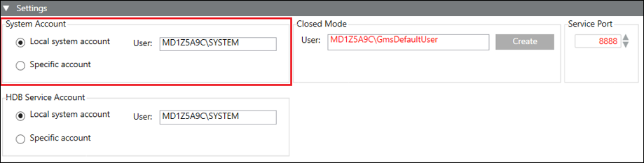
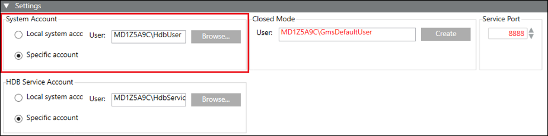

System Account Settings
Before creating a project and history database, it is recommended to check and, if required, configure the System Account, by changing the default. However, you may edit them after creating the project and history database.
System Account settings allow you to specify the user that internally runs the Pmon service of the project and is the HDB user, see Configure the System Account in System Settings Procedures. Using this user, the HDB is accessed for read and write operation.
System Accounts contains the following two options:
- Local system account (default selection): The local system account option sets the default, read-only value [Machine name\SYSTEM].
- Specific Account: Using the Specific Account option, you can change the default value (user). If you change the default, you must provide the valid password and confirm it. Changing the default (SYSTEM) internally changes the projects Pmon user and history database’s HDB user. This displays in red when you select the project and HDB. You must edit the project and HDB, which internally syncs the Pmon user and HDB user. The GMS_WCCILpmon_[Project Name] service gets configured in Windows to start under this specific account. The changed user is set as the HDB user.
- This user is set for all the projects. If you change the System Account user after creating a project, it displays in red in the Communication Security expander of the Project Settings tab, after you select a project node in the SMC tree. This indicates that it must be adapted by modifying the Server Project Parameters.
- This user is also set for all the history databases. If you change the System Account user after creating the history database, it displays in red in the Security expander of the Historic Databases tab, when you select the HDB node in the SMC tree. This indicates that it must be adapted by stopping and editing the history database.


Tips
- You can configure the user as a Windows (local/domain) user.
- Make sure that the Windows (local/domain) user configured using the Specific accounts has the Log on as service right.
- To create a new Windows local user, right-click Users and select Computer Management > Local Users and Groups > New User.
(See http://windows.microsoft.com/en-US/windows7/Create-a-user-account)
In the New User dialog box, if the User must change password at next logon check box is selected, a message informs you that before logging on for the first time, you must change the password. - It is recommended to specify the domain account user as a Specific account in the System Account if you want to perform an active directory synchronization to import users from the active directory (LDAP) to Desigo CC . Setting a local user account or service account may cause the connection to fail as a local user account or service account may not have access to active directory (LDAP).
- If you exceed the maximum allowed number of attempts while providing the password for a Specific account, a message informs you that the Specific accounts user account is locked.
- If you close the SMC after saving the values for the Specific accounts and re-launch it, the SMC does not retain the password and you must provide it again, for example, while creating a new project.
- If machine name is changed then system account is displayed in red, and you need to update Project. Internally the pmon user and HDB user is synced, and you need to create a new certificate, import it and set as default certificate.